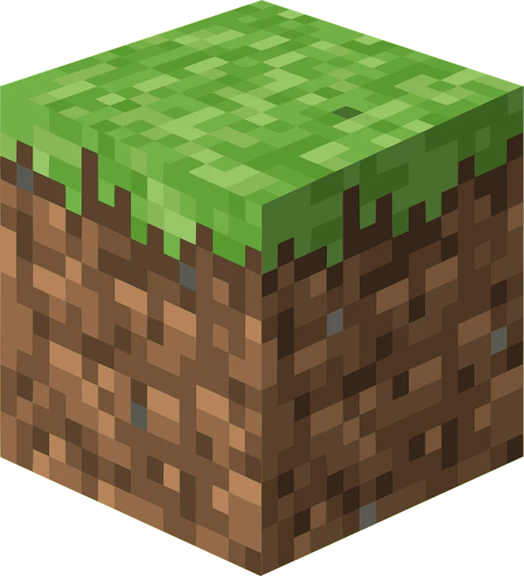
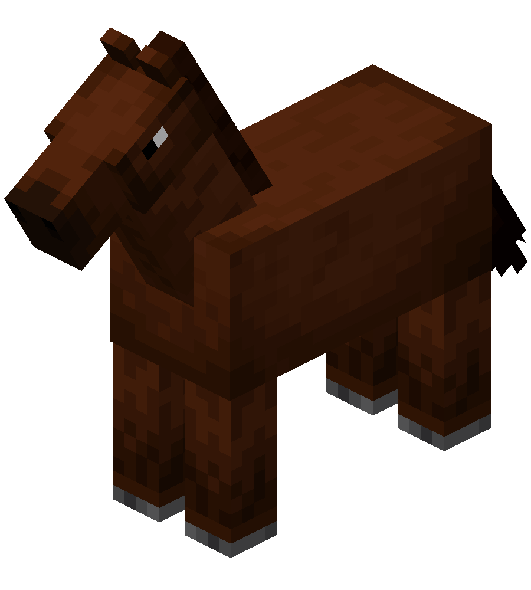
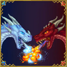
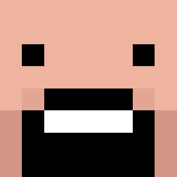
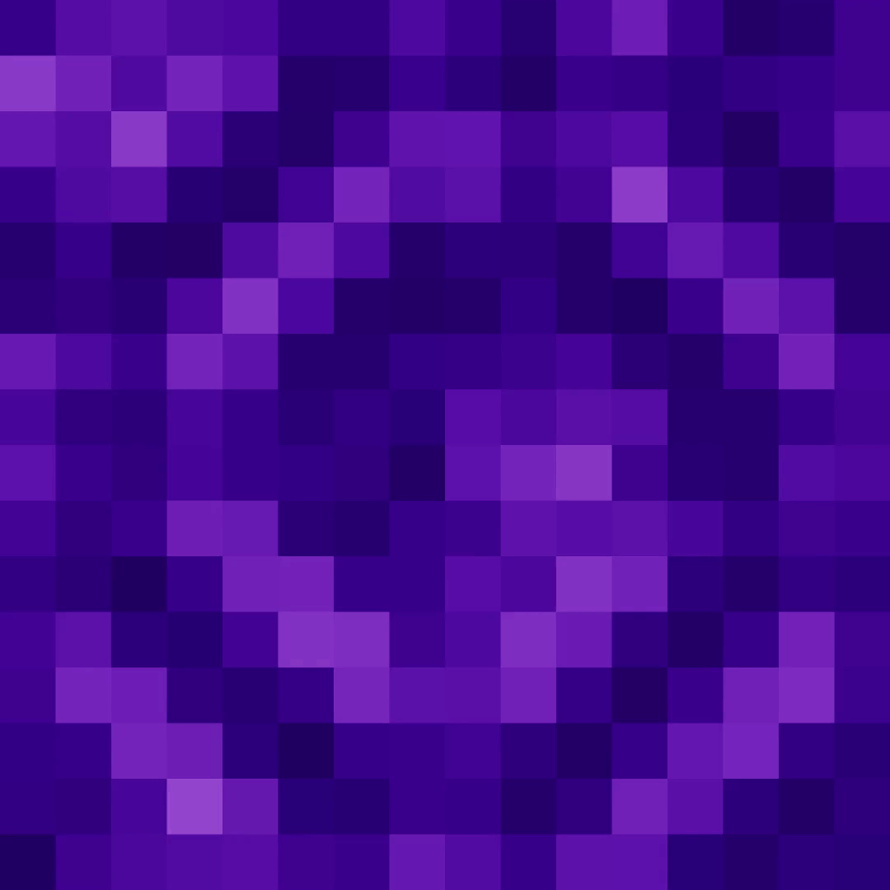

Meu primeiro post
Por: Davi Rocha
Boas-vindas ao meu novo blog! Aqui vou compartilhar meus conhecimentos sobre minecraft e curiosidades sobre minecraft e mods.
Vou compartilhar meus conhecimentos e ideias sobre minecraft

Por: Davi Rocha
Boas-vindas ao meu novo blog! Aqui vou compartilhar meus conhecimentos sobre minecraft e curiosidades sobre minecraft e mods.

Por: Davi Rocha
Neste post vou falar sobre um youtuber que eu assito desde a minha infância e que tem videos
incriveis sobre minecraft.
Esse youtuber é o jazzghost e tambem há outros youtubers que fazem videos incríveis.
Mais no
momento
a maioria destes youtubers estão focados em criar conteúdos sobre outros jogos.

Por: Davi Rocha
O mod Ice and Fire é um mod popular para Minecraft que adiciona dragões e outros criaturas
mitológicas ao jogo.
Ele permite aos jogadores criar e controlar dragões, bem como interagir com
eles de várias maneiras.
Fonte: Ice and Fire Mod Wiki

Por: Davi Rocha
Minecraft é cheio de curiosidades, desde sua criação em seis dias até personagens icônicos surgidos
por acidentes de programação.
Criação e Desenvolvimento
Minecraft foi criado pelo sueco Markus Persson, conhecido como Notch, em apenas seis dias, entre 10
e 16 de maio de 2009, inicialmente chamado de Cave Game.
A primeira versão pública foi lançada
em 16 de maio de 2009, e posteriormente o jogo evoluiu para Minecraft: Order of the Stone, antes de
receber o nome definitivo Minecraft
.
Em 2014, a Microsoft adquiriu a Mojang por 2,5 bilhões de dólares, garantindo expansão para
consoles, dispositivos móveis e realidade virtual.
Fonte: Inforcraft
Por: Davi Rocha
Um dos personagens mais famosos, o Creeper, surgiu de um erro: Notch tentou criar um porco, mas
inverteu os valores de altura e comprimento, gerando uma criatura alta e estranha que acabou se
tornando icônica.
Os sons assustadores dos Ghasts foram criados a partir do som de um gato
dormindo, gravado acidentalmente pelo produtor musical Daniel "C418" Rosenfeld.
Creeper Fonte: Tecnoblog
Ghast Fonte: MCEAD

Por: Davi Rocha
O mundo de Minecraft é gerado proceduralmente, o que faz parecer quase infinito.
Tecnicamente,
ele se estende por cerca de 60 milhões de blocos em cada direção, mas é limitado.
O End surgiu
de uma ideia descartada chamada Sky Dimension, que seria o oposto do Nether. Além disso, existem
aldeões zumbis, que surgem quando aldeões são atacados por zumbis, transformando-se em zumbis
aldeões.
Fonte: Exitlag